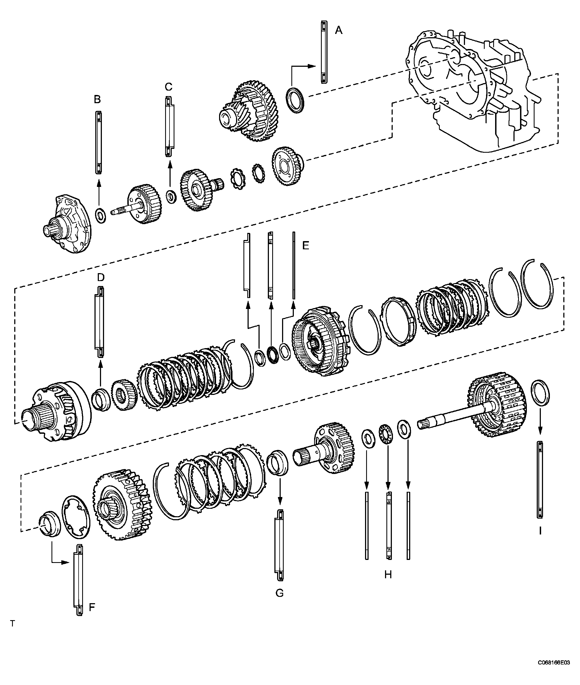
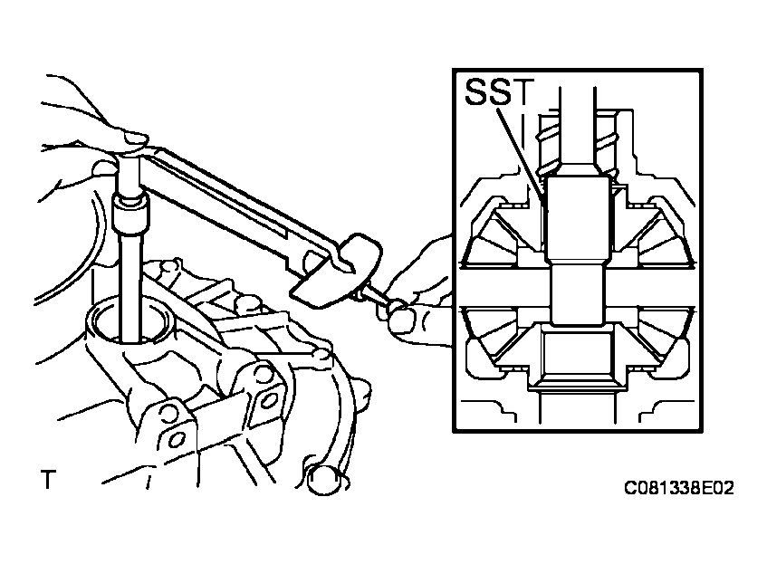
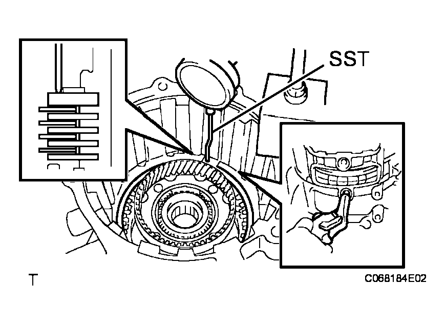
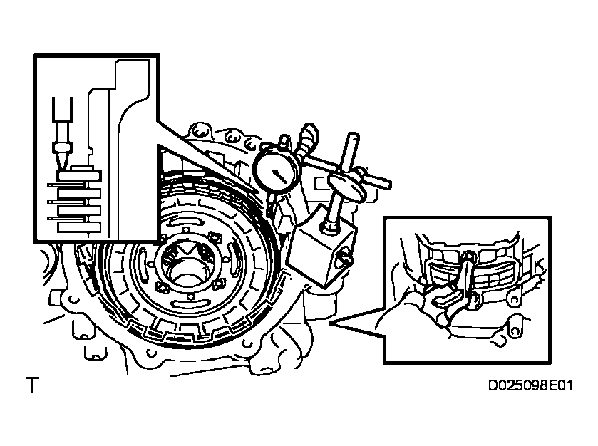

Automatic Transaxle Unit: Reassembly
- BEARING POSITION

Courtesy of © TOYOTA, LICENSE AGREEMENT TMS1002Bearing Position
BEARING POSITION REFERENCEMark Front Race Diameter Inside / Outside Thrust Bearing Diameter Inside / Outside Rear Race Diameter Inside / Outside A - 45.1 mm (1.7756 in.) / 65.1 mm (2.5630 in.) - B - 26 mm (1.0236 in.) / 43.4 mm (1.7087 in.) - C - 21 mm (0.8268 in.) / 34.85 mm (1.3721 in.) - D - 32.0 mm (1.260 in.) / 48.0 mm (1.890 in.) - E 36.75 mm (1.447 in.) / 49.95 mm (1.967 in.) 33.9 mm (1.335 in.) / 52.0 mm (2.047 in.) - / 51.7 mm (2.035 in.) F - 43.45 mm (1.7101 in.) / 58.5 mm (2.3031 in.) - G - 29.4 mm (1.1574 in.) / 44.4 mm (1.7480 in.) - H 23.5 mm (0.9252) / 37.3 mm (1.4685 in.) 22.5 mm (0.8858 in.) / 37.3 mm (1.4685 in.) 20.3 mm (0.7992 in.) / 33.8 mm (1.3307 in.) I - 43.45 mm (1.7101 in.) / 61.2 mm (2.4094 in.) or 43.45 mm (1.7101 in.) / 61.74 mm (2.4307 in.) - - INSTALL FRONT DIFFERENTIAL CASE REAR TAPERED ROLLER BEARING
- Using SST and a press, press in the front differential case rear tapered roller bearing inner race to the differential case.
SST 09726-40010, 09950-60020 (09951-00790)
- Using SST and a press, press in the shim and bearing outer race to the transaxle case.
SST 09950-60010 (09951-00650, 09950-60020 (09951-00720), 09950-70010 (09951-07100, 09951-07200)
- Using SST and a press, press in the front differential case rear tapered roller bearing inner race to the differential case.
- INSTALL FRONT DIFFERENTIAL CASE FRONT TAPERED ROLLER BEARING
- Using SST and a press, press in the bearing inner race to the differential case.
SST 09950-60010 (09951-00460), 09950-70010 (09951-07100)
- Using SST and a press, press in the tapered roller bearing to the transaxle housing.
SST 09950-60020 (09951-00680 09950-70010 (09951-07150)
- Using SST and a press, press in the bearing inner race to the differential case.
- ADJUST TAPERED ROLLER BEARING PRELOAD
- Coat the front differential case and bearing with ATF and install them to the transaxle case.
- Install the transaxle housing with the 14 bolts.
Torque: 29.4 N*m (300 kgf*cm, 22 ft.*lbf) for bolt A
22.1 N*m (225 kgf*cm, 16 ft.*lbf) for bolt B
- Using SST and a small torque wrench, measure the preload of the differential gear.

Courtesy of © TOYOTA, LICENSE AGREEMENT TMS1002SST 09564-32011
Standard preload:
New bearing: 0.98 to 1.57 N*m (10.0 to 16.0 kgf*cm, 8.7 to 13.9 in.*lbf)
Used bearing: 0.49 to 0.78 N*m (5.0 to 8.0 kgf*cm, 4.3 to 6.9 in.*lbf)
If the preload is not within the specification, remove the differential from the transaxle case. Reselect the transaxle case side adjusting shim according to the following table.
Standard adjusting shim thickness
STANDARD ADJUSTING SHIM THICKNESSMark Thickness Mark Thickness 01 1.90 mm (0.0748 in.) 11 2.40 mm (0.0945 in.) 02 1.95 mm (0.0768 in.) 12 2.45 mm (0.0965 in.) 03 2.00 mm (0.0787 in.) 13 2.50 mm (0.0984 in.) 04 2.05 mm (0.0807 in.) 14 2.55 mm (0.1004 in.) 05 2.10 mm (0.0827 in.) 15 2.60 mm (0.1024 in.) 06 2.15 mm (0.0846 in.) 16 2.65 mm (0.1043 in.) 07 2.20 mm (0.0866 in.) 17 2.70 mm (0.1063 in.) 08 2.25 mm (0.0885 in.) 18 2.75 mm (1.1082 in.) 09 2.30 mm (0.0906 in.) 19 2.80 mm (0.1102 in.) 10 2.35 mm (0.0925 in.) - -
- INSTALL TRANSAXLE CASE OIL SEAL
- Using SST and a hammer, tap in a new oil seal.
SST 09554-14010, 09950-70010 (09951-07100)
Standard depth: 2 +-0.5 mm (0.079 +-0.020 in.)
- Using SST and a hammer, tap in a new oil seal.
- INSTALL FRONT TRANSAXLE CASE OIL SEAL
- Using SST and a hammer, tap in a new oil seal.
SST 09726-27012 (09726-02041), 09950-70010 (09951-07150)
Standard depth: 5.9 +-0.5 mm (0.232 +-0.020 in.)
- Using SST and a hammer, tap in a new oil seal.
- INSTALL FRONT DRIVE PINION REAR CYLINDRICAL ROLLER BEARING
- Install the No. 1 transaxle case plate.
- Using SST and a hammer, tap in the roller bearing into the transaxle case.
SST 09950-60010 (09951-00610), 09950-70010 (09951-07150)
- INSTALL COUNTER DRIVE GEAR HOLE SNAP RING
- Using a screwdriver, install the counter drive gear hole snap ring to the transaxle case.
- INSTALL BREATHER PLUG HOSE
- INSTALL COUNTER DRIVE GEAR BEARING
- Using SST and a hammer, tap in the counter drive gear bearing LH outer race to the transaxle case.
SST 09950-60020 (09951-00890), 09950-70010 (09951-07150)
- Using SST and a hammer, tap in the counter drive gear bearing RH outer race to the transaxle case.
SST 09950-60020 (09951-00890), 09950-70010 (09951-07150)
- Install the counter drive gear bearing to the transaxle case.
- Using SST and a hammer, tap in the counter drive gear bearing LH outer race to the transaxle case.
- INSTALL MANUAL VALVE LEVER SHAFT OIL SEAL
- Using SST and a hammer, tap in a new manual valve lever shaft oil seal.
SST 09950-60010 (09951-00220), 09950-70010 (09951-07100)
Standard depth: 0 +-0.5 mm (0 +-0.020 in.)
- Using SST and a hammer, tap in a new manual valve lever shaft oil seal.
- INSTALL COUNTER DRIVEN GEAR
- Install the counter driven gear and drive pinion thrust bearing to the transaxle case.
- INSTALL PARKING LOCK PAWL
- Coat the parking lock pawl shaft with ATF.
- Install the parking lock pawl, torsion spring and shaft to the transaxle case.
HINT:
Check that the parking lock pawl can move smoothly.
- INSTALL MANUAL VALVE LEVER SHAFT
- Install the manual valve lever shaft to the transaxle case.NOTE: Be careful not to damage the lip of the oil seal.
- Install the manual valve lever shaft to the transaxle case.
- INSTALL PARKING LOCK ROD SUB-ASSEMBLY
- INSTALL MANUAL VALVE LEVER SUB-ASSEMBLY
- Coat the manual valve lever sub-assembly with ATF.
- Install the manual valve lever and a new manual valve lever spacer to the manual valve lever shaft.
- Using a pin punch and hammer, drive in the pin.
- Align the small hole of the spacer and the staking position mark on the lever shaft.
- Using a pin punch, stake the spacer through the small hole.
- Check that the spacer does not turn.
- INSTALL MANUAL VALVE LEVER SHAFT RETAINER SPRING
- Install the retainer spring.
- INSTALL PARKING LOCK PAWL BRACKET
- Install the cam guide and bracket with the 3 bolts.
Torque: 20.1 N*m (205 kgf*cm, 15 ft.*lbf)
- Install the cam guide and bracket with the 3 bolts.
- INSTALL COUNTER DRIVE GEAR
- Using SST and a press, press in the counter drive gear to the transaxle case.
SST 09223-15030, 09527-17011, 09950-60010 (09951-00650), 09950-70010 (09951-07150)
- Using SST and a press, press in the counter drive gear to the transaxle case.
- INSTALL PLANETARY GEAR ASSEMBLY
- Using SST and a press, press in the planetary gear to the transaxle case.
SST 09950-60010 (09951-00480), 09223-15030, 09527-17011, 09950-70010 (09951-07150)
- Using SST and a press, press in the planetary gear to the transaxle case.
- INSTALL COUNTER DRIVE GEAR NUT
- Fix the counter driven gear with the parking lock pawl.
- Using SST, install a new lock washer and nut.
SST 09387-00120
Torque: 280 N*m (2,855 kgf*cm, 207 ft.*lbf)
- Using SST and a small torque wrench, turn the counter drive gear at 60 turns per minute and measure the rotating torque.
SST 09387-00120
Standard rotating torque: 0.20 to 0.49 N*m (2 to 5 kgf*cm, 2 to 4 in.*lbf)
- Using SST and a hammer, stake the lock washer.
SST 09930-00010
- INSTALL 1ST AND NO. 2 REVERSE BRAKE PISTON O-RING
- Install the 2 O-rings.
- INSTALL 1ST AND NO. 2 REVERSE BRAKE PISTON
- Install the 1st and reverse brake piston to the transaxle case.NOTE: Be careful not to damage the lip of the oil seal.
- Install the 1st and reverse brake piston to the transaxle case.
- INSTALL 1ST AND REVERSE BRAKE RETURN SPRING SUB-ASSEMBLY
- Install the 1st and reverse brake return spring subassembly to the transaxle case.
- Using SST, a press and screwdriver, install the snap ring.
SST 09387-00070
- INSTALL 1ST AND REVERSE BRAKE DISC
- Install the 4 plates, 4 discs and flange to the transaxle case.
- Using a screwdriver, install the snap ring.
- INSPECT PACK CLEARANCE OF 1ST AND REVERSE BRAKE DISC
- Using SST and a dial indicator, measure the dimension "A" in the illustration while pressing the disc and plate from the rear side.
SST 09350-36010
Standard pack clearance: 0.806 to 1.206 mm (0.0317 to 0.0475 in.)

Courtesy of © TOYOTA, LICENSE AGREEMENT TMS1002HINT:
Pack clearance = Dimension A - Flange thickness - Snap ring thickness
Standard select flange thickness
STANDARD SELECT FLANGE THICKNESSMark Thickness Mark Thickness - 3.4 mm (0.134 in.) 2 3.8 mm (0.150 in.) 1 3.6 mm (0.142 in.) 3 4.0 mm (0.157 in.) - Check that the 1st and reverse brake piston moves when applying compressed air (392 kPa, 4.0 kgf/cm2 , 57 psi) to the oil hole.
- Using SST and a dial indicator, measure the dimension "A" in the illustration while pressing the disc and plate from the rear side.
- INSTALL FRONT PLANETARY SUN GEAR
- Install the planetary sun gear and needle roller bearing to the planetary gear.
- INSTALL OUTER RACE RETAINER
- Install the retainer to the No. 2 1-way clutch.
- INSTALL NO. 2 1-WAY CLUTCH
- Install the 1-way clutch and 2nd brake piston assembly to the rear planetary gear.
- INSTALL PLANETARY GEAR REAR THRUST NEEDLE ROLLER BEARING
- Install the No. 2 thrust bearing race, planetary gear thrust needle roller bearing and No. 1 thrust bearing race to the rear planetary gear.
- INSTALL REAR PLANETARY GEAR ASSEMBLY
- Install the rear planetary gear to the transaxle case.
- Using a screwdriver, install the snap ring.
- INSPECT NO. 2 1-WAY CLUTCH (See REASSEMBLY )
- INSTALL 2ND BRAKE PISTON SLEEVE
- Install the 2nd brake piston sleeve to the transaxle case.
- INSTALL 2ND BRAKE DISC
- Install the 3 discs, 3 plates and flange to the transaxle case.
- Using a screwdriver, install the snap ring to the transaxle case.
- INSPECT PACK CLEARANCE OF 2ND BRAKE
- Using a dial indicator, measure the 2nd brake pack clearance while applying and releasing compressed air (392 to 785 kPa, 4 to 8 kgf/cm2
, 57 to114 psi).
Standard pack clearance: 0.847 to 1.247 mm (0.0333 to 0.0491 in.)
HINT:
Pack clearance = Dimension A - Selected flange thickness - Snap ring thickness.

Courtesy of © TOYOTA, LICENSE AGREEMENT TMS1002Standard selected flange thickness
STANDARD SELECTED FLANGE THICKNESSMark Thickness Mark Thickness - 3.0 mm (0.118 in.) 2 3.4 mm (0.134 in.) 1 3.2 mm (0.126 in.) 3 3.6 mm (0.142 in.)
- Using a dial indicator, measure the 2nd brake pack clearance while applying and releasing compressed air (392 to 785 kPa, 4 to 8 kgf/cm2
, 57 to114 psi).
- INSTALL 2ND COAST AND OVERDRIVE BRAKE FLANGE HOLE SNAP RING
- Using a screwdriver, install the snap ring to the transaxle case.
- INSTALL 1-WAY CLUTCH ASSEMBLY
- Install the No. 2 thrust washer to the rear planetary gear.
- Install the 1-way clutch to the rear planetary sun gear.
- INSPECT 1-WAY CLUTCH ASSEMBLY (See INSPECTION )
- INSTALL REAR PLANETARY SUN GEAR THRUST NEEDLE ROLLER BEARING
- Install the thrust bearing and washer to the rear planetary sun gear.
- INSTALL REAR PLANETARY SUN GEAR ASSEMBLY
- Install the rear planetary sun gear assembly.
- INSTALL REAR PLANETARY SUN GEAR, NO. 2 THRUST NEEDLE BEARING
- Install the thrust bearing to the rear planetary sun gear.
- INSTALL DIRECT CLUTCH HUB
- Install the direct clutch hub.
- INSTALL THRUST NEEDLE ROLLER BEARING
- Install the No. 3 thrust bearing race, thrust needle roller bearing and C-2 hub thrust bearing race to the direct clutch hub.
- INSTALL 2ND COAST AND OVERDRIVE BRAKE DISC
- Install the 2 discs, 2 plates and 2 flanges to the transaxle case.
- INSTALL INTERMEDIATE SHAFT ASSEMBLY
- Install the intermediate shaft to the transaxle case.
- INSPECT PACK CLEARANCE OF 2ND COAST AND OVERDRIVE BRAKE
- As shown in the illustration, place a straightedge on the transaxle case and measure the distance between the 2nd coast and O/D brake flange and straightedge using a vernier caliper (Dimension A).
- As shown in the illustration, place a straightedge on the O/D brake piston and measure the distance between the transaxle rear cover and straightedge using a vernier caliper (Dimension B).
Calculate the piston stroke valve using the following formula. Select a flange which satisfies the piston stroke valve and install it.
Courtesy of © TOYOTA, LICENSE AGREEMENT TMS1002Standard pack clearance: 2.091 to 2.491 mm (0.0823 to 0.0981 in.)
HINT:
Pack clearance = Dimension "A" - Dimension "B" - Selected flange thickness.
Selected flange thickness
SELECTED FLANGE THICKNESSMark Thickness Mark Thickness 4 4.0 mm (0.1575 in.) 6 4.4 mm (0.1732 in.) 5 4.2 mm (0.1654 in.) 7 4.6 mm (0.1811 in.)
- INSTALL REAR CLUTCH DRUM THRUST NEEDLE ROLLER BEARING
- Install the bearing to the intermediate shaft.
- INSPECT INTERMEDIATE SHAFT ASSEMBLY
- Install the transaxle rear cover with the 11 bolts.
Torque: 24.5 N*m (250 kgf*cm, 18 ft.*lbf)
- Using a dial indicator, measure the end play of intermediate shaft.
Standard end play: 0.204 to 0.966 mm (0.008 to 0.038 in.)
- Remove 11 bolts and transaxle rear cover.
- Install the transaxle rear cover with the 11 bolts.
- INSTALL TRANSAXLE CASE GASKET
- Install 4 new gaskets to the transaxle case.
- INSTALL TRANSAXLE REAR COVER ASSEMBLY
- Apply FIPG to the transaxle case.
FIPG: Part No. 08826-00090, THREE BOND 1281 or equivalent
- Install the transaxle rear cover with the 11 bolts.
Torque: 24.5 N*m (250 kgf*cm, 18 ft.*lbf)
- Apply FIPG to the transaxle case.
- INSTALL FORWARD CLUTCH HUB SUB-ASSEMBLY
- Install the forward clutch hub to the transaxle case.
- INSTALL FORWARD CLUTCH HUB THRUST NEEDLE ROLLER BEARING
- Install the bearing to the forward clutch hub.
- INSTALL STATOR SHAFT THRUST NEEDLE ROLLER BEARING
- Install the bearing to the input shaft.
- INSTALL INPUT SHAFT ASSEMBLY
- Install the input shaft to the transaxle case.
- INSTALL OVERDRIVE BRAKE GASKET
- Install 2 new gaskets to the transaxle case.
- INSTALL DIFFERENTIAL GEAR ASSEMBLY
- Install the differential gear to the transaxle case.
- INSTALL OIL PUMP ASSEMBLY
- Install the oil pump with the 7 bolts.
Torque: 22 N*m (220 kgf*cm, 16 ft.*lbf)
- Install the oil pump with the 7 bolts.
- INSPECT INPUT SHAFT ASSEMBLY (See REASSEMBLY )
- INSPECT INPUT SHAFT END PLAY (See INSPECTION )
- INSTALL FRONT DRIVE PINION FRONT TAPERED ROLLER BEARING
- Install the thrust bearing to the transaxle housing.
- Using SST and a press, press in the cylindrical roller bearing to the transaxle housing.
SST 09950-60010 (09951-00650), 09950-70010
- INSTALL DIFFERENTIAL GEAR LUBE APPLY TUBE
- INSTALL BEARING LOCK PLATE
- Install the bearing lock plate to the transaxle housing with the bolt.
Torque: 11 N*m (110 kgf*cm, 8 ft.*lbf)
- Install the bearing lock plate to the transaxle housing with the bolt.
- INSTALL TRANSAXLE HOUSING
- Apply FIPG to the transaxle case.
FIPG: Part No. 08826-0090, THREE BOND 1281 or equivalent
- Install the transaxle housing with the 14 bolts.
Torque: 29.4 N*m (300 kgf*cm, 22 ft.*lbf) for bolt A
22.1 N*m (225 kgf*cm, 16 ft.*lbf) for bolt B
- Apply FIPG to the transaxle case.
- INSTALL C-2 ACCUMULATOR PISTON
- Coat 2 new O-rings with ATF and install them to the C-2 accumulator piston.NOTE: Be careful not to damage the O-rings.
- Install the spring and C-2 accumulator piston.
Standard accumulator spring
STANDARD ACCUMULATOR SPRING SPECIFICATIONSSpring Free length / Outer diameter Color C-2 66.90 mm (2.6339 in.) / 17.20 mm (0.6772 in.) -
- Coat 2 new O-rings with ATF and install them to the C-2 accumulator piston.
- INSTALL C-3 ACCUMULATOR PISTON
- Coat 2 new O-rings with ATF and install them to the C-3 accumulator piston.NOTE: Be careful not to damage the O-rings.
- Install the spring and C-3 accumulator piston.
Standard accumulator spring
STANDARD ACCUMULATOR SPRING SPECIFICATIONSSpring Free length / Outer diameter Color C-3 80.20 mm (3.1575 in.) / 18.70 mm (0.7362 in.) Blue
- Coat 2 new O-rings with ATF and install them to the C-3 accumulator piston.
- INSTALL B-2 ACCUMULATOR PISTON
- Coat 2 new O-rings with ATF and install them to the B-2 accumulator piston.NOTE: Be careful not to damage the O-rings.
- Install the spring and B-2 accumulator piston.
Standard accumulator spring
STANDARD ACCUMULATOR SPRING SPECIFICATIONSSpring Free length / Outer diameter Color B-2 66.90 mm (2.6339 in.) / 15.50 mm (0.6102 in.) Green
- Coat 2 new O-rings with ATF and install them to the B-2 accumulator piston.
- INSTALL CHECK BALL BODY
- Install the spring and check ball body.
- INSTALL BRAKE DRUM GASKET
- Install a new brake drum gasket.
- INSTALL TRANSAXLE CASE GASKET
- Install a new transaxle case gasket.
- INSTALL TRANSAXLE CASE 2ND BRAKE GASKET
- Install a new transaxle case 2nd brake gasket.
- INSTALL TRANSMISSION WIRE
- Coat a new O-ring with ATF, and install it to the transmission wire.
- Pass the transmission wire through the transaxle.
- Install the bolt and transmission wire.
Torque: 5.4 N*m (55 kgf*cm, 48 in.*lbf)
- INSTALL TRANSMISSION VALVE BODY ASSEMBLY
- Install the valve body with the 13 bolts.
Torque: 10.8 N*m (110 kgf*cm, 8 ft.*lbf)
HINT:
Bolt length:
32 mm (1.26 in.) for bolt A
22 mm (0.87 in.) for bolt B
55 mm (2.17 in.) for bolt C
45 mm (1.77 in.) for bolt D
- Install the detent spring, detent spring cover with the 2 bolts.
Torque: 10.8 N*m (110 kgf*cm, 8 ft.*lbf)
HINT:
Bolt length:
14 mm (0.55 in.) for bolt A
45 mm (1.77 in.) for bolt B
- Check that the manual valve lever is touching the center of the detent spring tip roller.
- Connect the 5 solenoid connectors.
- Coat a new O-ring with ATF, and install it to the ATF temperature sensor.
- Install the ATF temperature sensor with the lock plate and bolt.
Torque: 10.8 N*m (110 kgf*cm, 8 ft.*lbf)
HINT:
Bolt length:
55 mm (2.17 in.)
- Install the valve body with the 13 bolts.
- INSTALL VALVE BODY OIL STRAINER ASSEMBLY
- Coat a new O-ring with ATF, and install it to the oil strainer.
- Install the oil strainer with the 3 bolts.
Torque: 10.8 N*m (110 kgf*cm, 8 ft.*lbf)
- INSTALL AUTOMATIC TRANSAXLE OIL PAN GASKET
- Install a new gasket to the oil pan.
- INSTALL AUTOMATIC TRANSAXLE OIL PAN SUBASSEMBLY
- Install the 2 magnets in the oil pan.
- Install the oil pan with the 19 bolts.
Torque: 7.8 N*m (80 kgf*cm, 71 in.*lbf)
- INSTALL NO. 1 TRANSAXLE CASE PLUG
- Coat 5 new O-rings with ATF, and install them to the case plugs.
- Install the 4 case plugs.
Torque: 7.4 N*m (75 kgf*cm, 65 in.*lbf)
- Install the case plug.
Torque: 7.4 N*m (75 kgf*cm, 65 in.*lbf)
- INSTALL OIL COOLER TUBE UNION (OUTLET)
- Coat 2 new O-rings with ATF, and install them to the union.
- Install the union.
Torque: 27 N*m (275 kgf*cm, 20 ft.*lbf)
- INSTALL OIL COOLER TUBE UNION (INLET)
- Coat 2 new O-rings with ATF, and install them to the union.
- Install the union.
Torque: 27 N*m (275 kgf*cm, 20 ft.*lbf)
- INSTALL TRANSMISSION REVOLUTION SENSOR
- Install the transmission revolution sensor with the bolt.
Torque: 5.4 N*m (55 kgf*cm, 48 in.*lbf)
- Install the transmission revolution sensor with the bolt.
- INSTALL PARK/NEUTRAL POSITION SWITCH ASSEMBLY
- Install the park/neutral position switch onto the manual valve lever shaft and temporarily install the 2 adjusting bolts.
- Install a new lock washer with the nut.
Torque: 6.9 N*m (70 kgf*cm, 61 in.*lbf)
- Temporarily install the control shaft lever.
- Turn the lever counterclockwise until it stops, and then turn it clockwise 2 notches.
- Remove the control shaft lever.
- Align the groove with the neutral basic line.
- Tighten the 2 bolts.
Torque: 5.4 N*m (55 kgf*cm, 48 in.*lbf)
- Using a screwdriver, stake the nut with the lock washer.
- Install the control shaft lever, washer and nut.
Torque: 12.7 N*m (130 kgf*cm, 9 ft.*lbf)